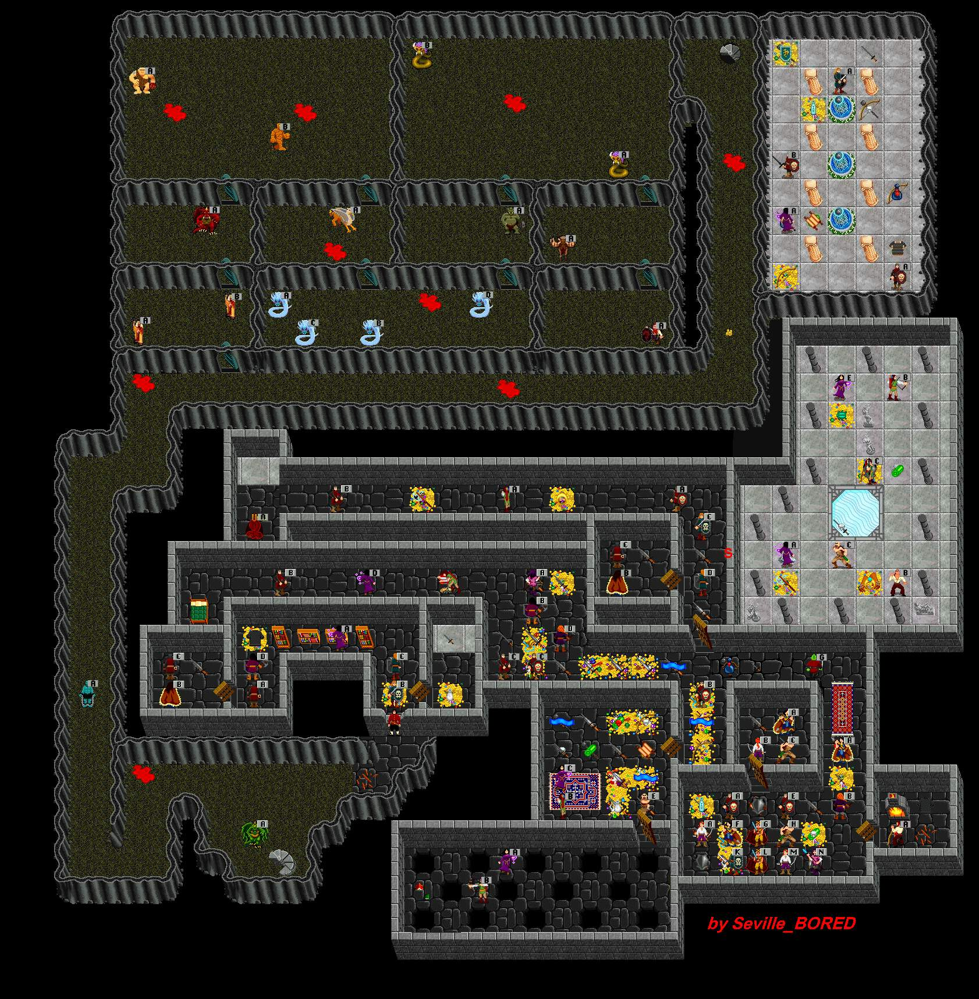

| MasterMind Lair | |||||||||
 |
|||||||||
| The MasterMind Lair is a complicated area where not just one group of crits take on the place but several groups working in unison to accomplish many of the quests. Dyleageir will present a random piece of gear if you finish the Moose Rescue quest. The Moose is dieing of thirst and has only a few HPt. Lead the Moose to water by finding a random piece of Corn and holding it in hand to make the Moose follow you. Espear Archers with Prone Longbows try to knock you down while you try to get to Jamaii's Journal and win the Prisoner's Freedom. Pet eagerly waits for you to descend into the level. Twin DeathCobras, a quartet of UberCryoWyrms, Flail Giants, FireGolems, MindGrips, Pyroserpoids, High Level Ment and Healer crits make up most of the wandering crits. Figure out the MasterMind's Puzzle by portaling into the Lair and running the area (similar to Pillars). MasterMind knows most of Mentalist discs and Shockwaves mostly. MasterMind hides and Backstabs, casts Darkness and Blind. It uses Oracle Dagger +5 combat adds (+2 Agility and +2 Intelligence) prones and glows. Only drops Dagger sometimes. Drops Stat Pots that tie. MasterMind's henchmen include Archers, Ments and MA crits to harrass you while MasterMind tries to Charm and confuse you. | |||||||||
| Back to News Page. | |||||||||